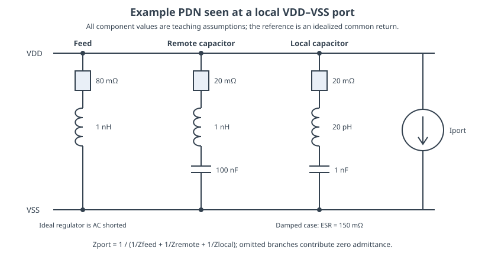
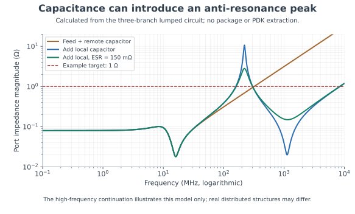
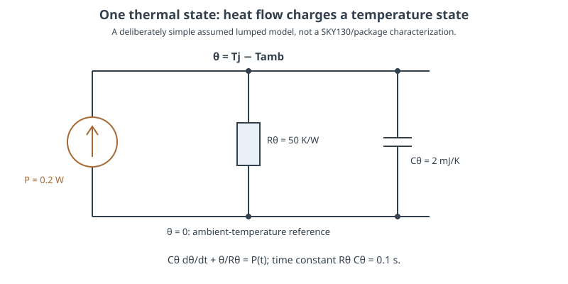
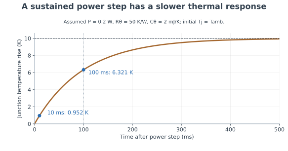

Power, Package & Thermal Coupling
The voltage at a transistor depends on a complete electrical loop. Its parameters also depend on where the heat goes.
- Define a local power port and use impedance to relate switching current to supply disturbance.
- Explain capacitor ESR, ESL, self-resonance and interactions between decoupling branches.
- Separate published SKY130 interconnect coefficients from assumed package and thermal parameters.
- Calculate temperature-dependent voltage drop and a simple thermal transient.
Scope: all package inductances, capacitor ESR/ESL values, temperature coefficients and thermal resistances/capacitances below are explicit teaching assumptions. The SKY130 fact used numerically is its public met3 sheet-resistance coefficient. No package, board or electrothermal model was extracted or characterized for this lesson.
1. The useful supply is a difference at the load
A logic gate responds to its local VDD relative to its local VSS. An analog amplifier responds to its local supply, body and signal-reference conditions. Neither sees an ideal voltage merely because the schematic wire has a supply name. Current travels through the regulator, board, package, pad, on-chip grid and a return path. Resistance produces voltage drop; changing current produces inductive voltage; stored charge and energy influence the transient.
Define the measurement port before quoting “supply noise.” For an on-chip receiver, measure VDD_local − VSS_local. For an analog input, also consider how its signal reference moves relative to the receiver's body or ground. Two nodes can move together relative to board ground while preserving their local supply difference, yet still disturb an interface connected to a different reference.
A digital activity burst can therefore produce several analog effects: supply modulation, reference displacement, substrate interference and slower heating. A single ideal-ground transient test does not cover all four. ADI MT-101 connects decoupling, loop inductance and frequency-dependent supply rejection; translate its circuit principles to the actual chip/package geometry rather than copying a board placement distance into a chip rule.
2. Impedance turns a current budget into a voltage budget
For a linearized power-distribution network at a defined port, a current perturbation and voltage perturbation obey ΔV(f) = −ZPDN(f)ΔI(f) under the convention that positive load current is drawn from the supply. Magnitudes give a useful initial budget. If 20 mA of relevant current variation may consume 20 mV of supply margin, the corresponding impedance target is 20 mV / 20 mA = 1 Ω.
Ztarget = allowed voltage disturbance / relevant current changeThis target is a design aid, not a universal pass/fail line at every frequency. The allowed voltage depends on timing, headroom, noise and reference requirements. The current spectrum depends on activity, edge shape and spatial distribution. A transient is the response to the complete waveform, and a multiport network can transfer one block's current into another block's supply. A flat scalar target cannot describe all of that by itself.
Digital and analog designers should agree on the disturbance that matters. A slow droop may affect digital delay or analog headroom. A narrow spectral line can create a converter spur despite small RMS noise. A short disturbance near a comparator decision can matter more than the same energy between decisions. Preserve event timing as well as average current when constructing the stimulus.
3. A capacitor is a branch with resistance and inductance
A useful first model for a decoupling branch is a series capacitance C, equivalent series resistance ESR, and equivalent series inductance ESL. ESL includes the selected connection loop as well as the component contribution. At low frequency the capacitive reactance dominates; near self-resonance the reactive terms cancel; above that frequency the branch becomes inductive.
ZC(ω) = ESR + jωESL + 1/(jωC)fSRF = 1 / [2π√(ESL·C)]| Assumed branch | C | ESL | ESR | Calculated self-resonance |
|---|---|---|---|---|
| Remote capacitor branch | 100 nF | 1 nH | 20 mΩ | 15.915 MHz |
| Local capacitor branch | 1 nF | 20 pH | 20 mΩ | 1.125 GHz |
These branch values illustrate scale, not an achievable SKY130 cell or a specified package. A 1 nF on-chip capacitor also requires substantial area and a realizable connection. The low-frequency C value alone cannot establish useful high-frequency decoupling. Device bias dependence, leakage, voltage limits and the routing loop all matter for an actual implementation.
The model's impedance at exact series resonance is its ESR. Lower ESR reduces that branch's minimum impedance, but damping the complete network is a separate question. A low-loss capacitive branch in parallel with an inductive branch can create a high impedance between their individual resonances.
4. Parallel branches can produce anti-resonance

The feed branch contains 80 mΩ and 1 nH. The other branches use the preceding table. At the port, add admittances: Zport = 1/(1/Zfeed + 1/Zremote + 1/Zlocal). Omitting the local capacitor means omitting its admittance. Do not add the three impedance magnitudes; their phases determine the result.

Near the peak, inductive and capacitive branch currents can largely cancel at the port, leaving a small net admittance. The load therefore sees a large voltage response per unit current. Adding capacitance improved some frequencies and worsened another region. Damping lowers the peak but also changes losses and the impedance minimum; it is not free performance.
Use this plot to ask where activity energy and circuit sensitivity coincide. If a supply-current harmonic falls near a peak, examine the actual current amplitude, phase and operating state. A real package adds mutual inductance and distributed structures, and the regulator has its own control-loop impedance. The high-frequency continuation of this small circuit is a mathematical illustration, not validation up to 10 GHz.
5. Check current slew and available charge
Three elementary estimates expose different limits. For an assumed loop inductance of 1 nH and current slew of 20 mA/ns, L·di/dt = 20 mV. For 0.1 Ω series resistance and a 20 mA current increment, the incremental resistive drop is 2 mV. If a capacitor alone must provide 20 mA for 1 ns while changing by no more than 20 mV, C ≥ ΔQ/ΔV = IΔt/ΔV = 1 nF.
These values are not automatically three simultaneous worst-case drops to add. The actual current divides among branches and changes with time. The charge estimate assumes the rest of the network supplies none of that increment during the stated interval. The inductive estimate uses the current slew in the stated loop, which may differ from the transistor switching current slew.
Local decoupling helps because it supplies part of a fast demand through a shorter loop. It must still connect to both supply and return with useful impedance. A capacitor physically close to VDD but connected to a distant, shared return can retain a large loop. Likewise, a wide supply route does not repair an inadequate return connection.
Check: does doubling C halve the initial ESR step and inductive spike?
No, not if ESR, ESL and the current waveform remain unchanged. Doubling C halves the voltage change caused by a fixed charge withdrawal in the ideal charge model. The ESR and ESL terms depend on resistance, inductance and their branch currents. Changing the component or route may change all three parameters, which requires a new network calculation.
6. Temperature changes electrical margins
A common local approximation for a conductor is R(T) = Rref[1 + α(T−Tref) + β(T−Tref)²]. The coefficient and valid temperature interval must come from the actual process/extraction model or measurement. Do not substitute a bulk-metal coefficient and present it as a qualified thin-film interconnect model.
The public SKY130 RCX table lists met3 sheet resistance as 47 mΩ/□, or 0.047 Ω/□. A 400 µm long, 2 µm wide route therefore has the simple table-based estimate R = 0.047 × 400/2 = 9.4 Ω, before contacts, vias and geometrical corrections. For this teaching calculation, assign that R to an assumed reference condition and use an assumed α = 0.003 K⁻¹ with β = 0.
| Example condition | Calculated route R | Drop at 2 mA |
|---|---|---|
| Assumed reference temperature | 9.400 Ω | 18.800 mV |
| 60 K above that reference | 11.092 Ω | 22.184 mV |
The 18% increase follows from the chosen coefficient. It is not a measured SKY130 temperature curve. A real design also needs temperature-dependent transistor behavior and reliability rules. Passing a voltage-drop calculation does not establish electromigration lifetime. Conversely, satisfying a current-density limit does not guarantee sufficient analog headroom or digital timing margin.
7. Power creates temperature fields and thermal memory
The steady approximation Tj = Tambient + P·Rθ is useful only when Rθ represents the actual boundary conditions and heat paths. A datasheet's junction-to-ambient metric depends on the characterization board and environment. TI's thermal-metrics application note explains why such values cannot be treated as a package-only constant. Thermal characterization parameters such as ΨJT also have different definitions from a simple thermal resistance.

For the assumed one-state model, Rθ = 50 K/W and Cθ = 2 mJ/K give τ = RθCθ = 0.1 s. Starting at ambient, a sustained 0.2 W step gives ΔT(t) = 10[1−exp(−t/0.1 s)] K. The rise is 0.952 K after 10 ms, 6.321 K after 100 ms, and approaches 10 K. Neither the parameters nor the time constant describe a particular SKY130 die.

Matching depends on temperature differences, not only average die temperature. Suppose a 0.15 W digital block has assumed steady thermal transfer coefficients of 25 K/W to analog device A and 15 K/W to device B. Their temperature difference is 0.15 × (25−15) = 1.5 K. With an assumed differential error sensitivity of 20 µV/K, that creates 30 µV. The numerical values are illustrative, but the mechanism explains why geometric symmetry around an array does not cancel an asymmetric heat source.
8. Close the electrical and thermal loop
Begin with activity-dependent power and current waveforms. Use the electrical network to estimate local supply conditions, and the thermal model to estimate local temperatures. Re-evaluate resistance and device behavior at those temperatures when feedback is material. Leakage, bias current and switching power can themselves change with temperature, so one nominal calculation may not describe the final operating point.
Keep time scales explicit. A nanosecond event may need package/interconnect analysis; a repeated burst can heat a region over much longer intervals. A measurement taken immediately after idle and one taken after sustained activity may differ even with identical logic vectors. For analog characterization, record warm-up, workload and the location of temperature measurements along with supply settings.
Check: can a circuit pass steady IR drop and still fail because of the package?
Yes. Steady IR drop uses DC resistance and current. Package/return inductance and decoupling resonances respond to changing current. A transient or frequency-domain analysis can reveal violations absent from the DC result. Temperature changes can then move both resistance and circuit sensitivity.
Key takeaways
- Define the local supply and return port before measuring noise or impedance.
- Model ESR, ESL and branch interactions; more capacitance can create an impedance peak.
- Use current slew, charge and impedance estimates as complementary checks.
- Keep process facts separate from assumed package and thermal models.
- Spatial temperature differences and workload history can create analog mismatch.
Sources & scope
Checked 6 November 2026. Figures are original circuit drawings and calculations from the values stated here. Only the quoted met3 sheet coefficient is a SKY130 process value; it is not a complete temperature-aware extraction model.
- SKY130 parasitic layout extraction documentation — Table 91 resistance values, met3 = 47 mΩ/□.
- Analog Devices MT-101: Decoupling Techniques — nonideal capacitors, return-loop effects and frequency-dependent supply sensitivity.
- Analog Devices StudentZone: Decoupling and bypass capacitors — ESR, ESL and capacitor self-resonance.
- Texas Instruments SPRA953D: Semiconductor and IC Package Thermal Metrics — revised March 2024; interpretation and limitations of thermal metrics.
All 84 lessons
- Part I · Foundations: the physical chip and its vocabulary
- 1. What Is a Chip? Board, Package & Die
- 2. The Silicon Wafer: From Crystal to Dies
- 3. How a Die Is Built: SKY130 Layers & Lithography
- 4. The MOSFET: SKY130’s Transistor
- 5. Anatomy of a Die: Core, Pad Ring & Seal Ring
- 6. Packages: Wire Bonds, Flip-Chip, QFN & WLCSP
- 7. The PCB and the Path to the Transistor
- 8. The Design Flow and Its Files: RTL to GDS
- 9. Signals Primer: DC, AC, RMS, Decibels & the FFT
- Part II · Transistors to logic gates
- 10. Logic Gates at the Transistor Level
- 11. Drive Strength & Transistor Sizing
- 12. More Gate Topologies
- Part III · Standard-cell layout
- 13. Site Rows & Standard Cell Placement
- 14. The Power Grid & Routing Grids
- 15. Metal Layers, Vias & the Stackup
- 16. Inside a Standard Cell's Layout
- 17. The Cell Template: Tracks, Sites & Edges
- 18. Anatomy of a Bigger Cell
- 19. Pin Access & Porosity
- 20. A Flip-Flop From the Inside
- Part IV · Loads, timing and interconnect
- 21. Loads
- 22. Liberty Files: What a Cell Library Records
- 23. Reading Liberty Timing Tables
- 24. Standard-Cell Characterization: How Liberty Is Made
- 25. Timing
- 26. Setup and Hold
- 27. Latch-Based Design & Time Borrowing
- 28. Routing Resistance and Parasitics
- 29. Delay from Physics: Transistor, Contact, Via, Wire & Gate
- 30. Electromigration
- 31. Reliability & Aging: HCI, BTI, TDDB & Self-Heating
- 32. DFM, Variation & Yield: A Digital View
- Part V · Digital implementation
- 33. RTL Patterns: FSMs, Handshakes, Resets & Lint
- 34. RTL, Synthesis & Timing Constraints
- 35. The Clock Tree
- 36. Clock Generation: Oscillators, DCO, PLL & Jitter
- 37. Clock Gating & Power States
- 38. Power Analysis & Low-Power Cells
- 39. Clock-Domain Crossings & Reset
- 40. Scan
- 41. DFT Beyond Scan: Faults, ATPG, BIST and JTAG
- 42. A Timed Logic Path: Registers, Clocks, Scan & Speed/Power
- 43. Memories: SRAM, OpenRAM and DFFRAM
- 44. Datapath & Arithmetic
- 45. Multi-Corner STA: OCV, CRPR & Hold Cells
- 46. Functional Verification: Testbenches, Assertions, Formal & Gate-Level Sim
- Part VI · Physical cells and the floorplan
- 47. Fill Cells
- 48. Well Taps and Latch-up
- 49. Endcaps
- 50. Tie Cells
- 51. Antenna Diodes
- 52. Decap Cells
- 53. Spare Cells and ECO
- 54. Level Shifters
- 55. Floorplan
- 56. Caravel Integration: The User Project Wrapper
- 57. Hierarchical Design, Abstracts & ECO
- 58. Placement: Global, Legalization & Detailed
- 59. Routing & Timing Closure
- 60. Digital Signal Integrity: Crosstalk Delay & Glitch
- 61. Metal Fill and Cell Fill
- 62. Physical Verification Signoff
- 63. Power-Integrity Signoff: Static IR, Dynamic IR & EM
- Part VII · The chip boundary: I/O, ESD and package
- 64. The I/O Ring
- 65. ESD and Clamps
- 66. I/O Fill
- 67. RDL Routing
- 68. I/O Power and IR Drop
- 69. Power, Package & Thermal Coupling
- 70. Tapeout, MPW & Tiny Tapeout
- 71. Post-Silicon Bring-Up, Test & Characterization
- Part VIII · Analog circuits
- 72. Analog Bias, gm & Headroom
- 73. Feedback, Loading & Stability
- 74. Differential Pairs, Common Mode & CMFB
- 75. Noise, Mismatch & Variation
- 76. References, Temperature & Startup
- 77. Comparators & Power Management: StrongARM, LDO & POR
- 78. Matching, Layout & Extracted Netlists
- Part IX · Mixed-signal: sampling, conversion and verification
- 79. Sampling, Aliasing & Settling
- 80. ADC & DAC Interfaces
- 81. FFT, Noise & Distortion Measurements
- 82. Calibration, Trimming & Testability
- 83. Crosstalk, Return Paths & Isolation
- 84. Mixed-Signal Verification & Bring-Up
Updated 11 November 2026 · 84 lessons · Offline lessons, diagrams, source code and recorded results · External references require internet access.